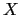
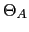

Next: Frame-Based Cluster Purification Metrics Up: Frame-Level Cluster Purification Previous: Frame-Level Cluster Purification Contents
In order to see the effect of typical acoustic speaker models with non-speech data an experiment was performed on all the data belonging to an ICSI meeting used in the RT04s evaluation. All the acoustic frames  from that meetings were split into speech frames and non-speech frames according to the reference segmentation file provided by NIST. A speaker model with 5 Gaussian Mixtures was trained using only the speech-labelled frames . Then both speech and non-speech frames were evaluated using such model and two normalized histograms were created from the resulting likelihood scores, as can be seen in Figure 4.9.
The scores of the non-speech frames are mainly located in the higher part of the histogram, indicating that usually obtains higher likelihood scores than even when evaluating it on a model trained only with data. Part of the frames are also in the upper part of the histogram, which are most probably non-speech frames that are labelled as speech in the reference file. Even with the use of a speech/non-speech detector, a residual error of around 5% of non-speech data enters the clustering system. In order to purify a cluster both the non-speech (undetected) data and the speech-labelled non-speech data needs to be eliminated while maintaining the rest of acoustic frames that discriminate between speakers. It is clear that likelihood can be used to detect and filter out these frames.
A possible explanation for this behavior is illustrated in
Figure 4.10 where a cluster model
, using M
Gaussian mixtures, is trained using acoustic data labelled
as speech by the speech/non-speech detector. After training the
model, a group of Gaussian mixtures  adapt their mean and
variances to model the subset of the speaker data ,
while another group of Gaussians
adapt their mean and
variances to model the subset of the speaker data ,
while another group of Gaussians  appears to model the
subset of data which are nons-speech frames remaining in
. Since the number of frames in is typically much
larger than those of , the number of Gaussian mixtures
ssociated to each subgroup are
appears to model the
subset of data which are nons-speech frames remaining in
. Since the number of frames in is typically much
larger than those of , the number of Gaussian mixtures
ssociated to each subgroup are
 and, at times,
could be 0 if the non-speech data is minimal.
Furthermore, the variance of the non-speech Gaussian mixtures in
and, at times,
could be 0 if the non-speech data is minimal.
Furthermore, the variance of the non-speech Gaussian mixtures in
 is always much smaller than
is always much smaller than  . This is the reason
why any non-speech frame evaluated by the model gets a higher
score than a speech frame. This is taken advantage of in the frame
level purification algorithm.
. This is the reason
why any non-speech frame evaluated by the model gets a higher
score than a speech frame. This is taken advantage of in the frame
level purification algorithm.
To further prove that the acoustic frames with a higher likelihood are those which are less suitable to discriminate between speaker models another experiment was performed taking two speaker clusters trained with acoustic data for two different speakers according to the reference segmentation. Figure 4.11 illustrates the relationship between the likelihood scores of the data used in training each of the two models and evaluated on both models. It is possible to determine an axis between the likelihood values of the two models. The distance to this axis indicates the discriminative power of the data from each cluster. Frames from both clusters with the highest likelihood values are grouped together on this axis, indicating how badly they can differentiate between speakers.
user 2008-12-08